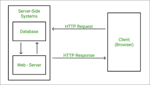
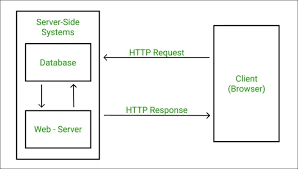
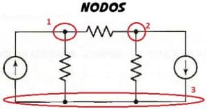
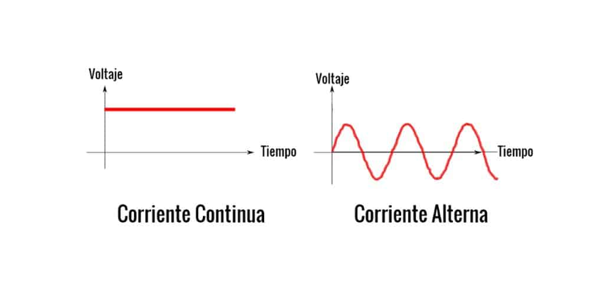

Telecomunicaciones
Que son?
Se conforman por la transmision de informacion por medio de ondas electromagneticas y por medio de protocolos que permiten la tranferencia de
la informacion de manera remota y a grandes distancias.
Parte muy importante de las telecomunicaciones son los protocolos que utilizan, como lo son:
 


Analisis de nodos
Se conforma con la metodologia para resolver circuitos electronicos de una manera viable En el análisis de nodos se escribe una ecuación para cada nodo,
con condición que la suma de esas corrientes sea igual a cero en cualquier instante, por lo que una carga Q nunca puede acumularse en un nodo. Estas corrientes se escriben en términos de las tensiones de cada nodo del circuito.
Así, en cada relación se debe dar la corriente en función de la tensión que es nuestra incógnita, por la conductancia.

.png)
Fuente: https://es.wikipedia.org/wiki/An%C3%A1lisis_de_nodos
Corriente Alterna

La corriente alterna (c.a. ó a.c.) no puede almacenarse en baterías, pero es
mucho más fácil y barata de producir gracias a los alternadores. La corriente
alterna cambia de polaridad cíclicamente, siendo alternativamente positiva y
negativa respectivamente. Las características de la corriente alterna son: la frecuencia
(ciclos en un segundo) y la tensión de pico a pico; aunque suele utilizarse el valor
de tensión eficaz (tensión RMS).
Circuitos RLC
En electrodinámica, un circuito RLC es un circuito lineal que contiene una resistencia eléctrica, una bobina y un capacitor.Existen dos tipos de circuitos RLC, en serie o en paralelo, según la interconexión de los tres tipos de componentes. El comportamiento de un circuito RLC se describe generalmente por una ecuación diferencial de segundo orden
.png)
.png)
donde: